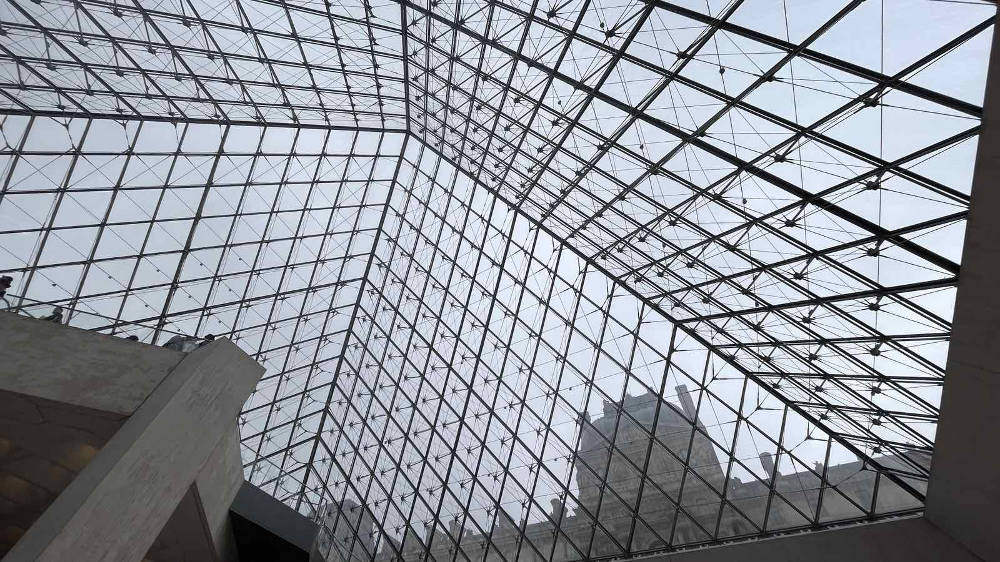
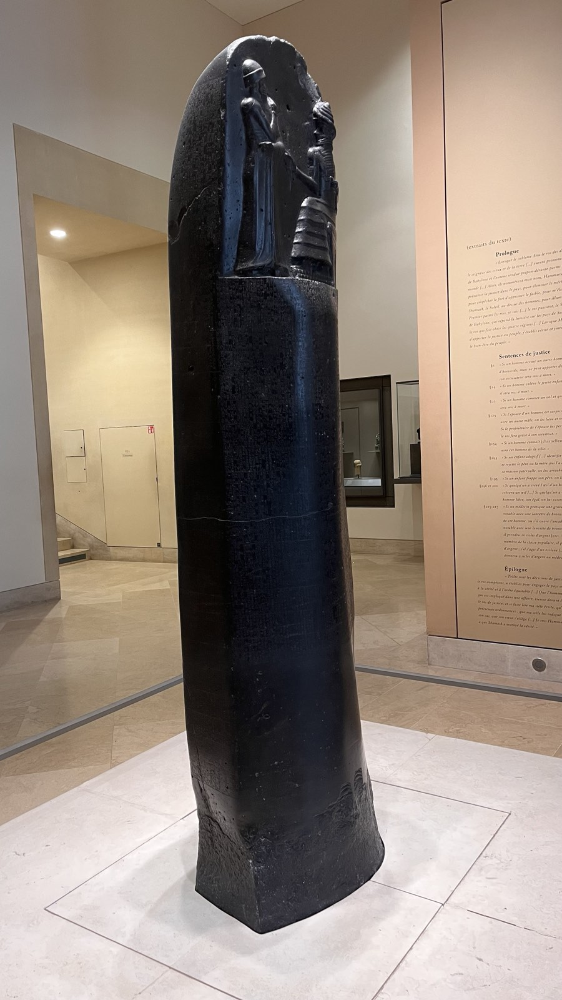
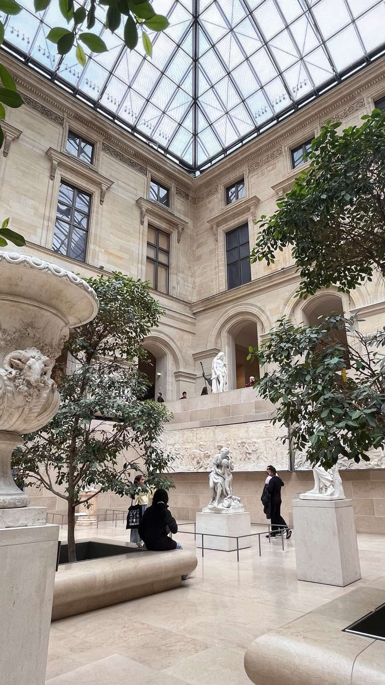

Този приятен престой приключва с посещение на така известния музей Лувъра.
Аз пожелах да отидем до там с метро, той като никога не го бях виждал. Когато стигнахме там беше много рано и почти празно и обиколихме целия музей докато не намерихме Мона Лиза, вече обградена с хора.
След като задраскахме това име от нашия списък, разгледахме другите интересни картини в залата - Свободата, водеща народа (изобразяваща известната Мариана) и Салът на Медуза. После се разходихме из залите със статуите от Гърция и Рим, където видях Венера Милоска. След това усмяхме да намерим удивителната Галерия на Аполон.
Взехме си почивка в Starbucks, където си купих чаши със символите на Франция и разгледахме онлайн какво друго да посетим.
Накрая обиколихме долния етаж с древни египетски артефакти и също видяхме кодът на Хамураби. Там намерихме един един вид вътрешен "двор", където сред дърветата седяха статуи и човек може да седне да ги рисува или да си напише домашните.
След като излезнахме от сградата, се снимахме с пирамидата.